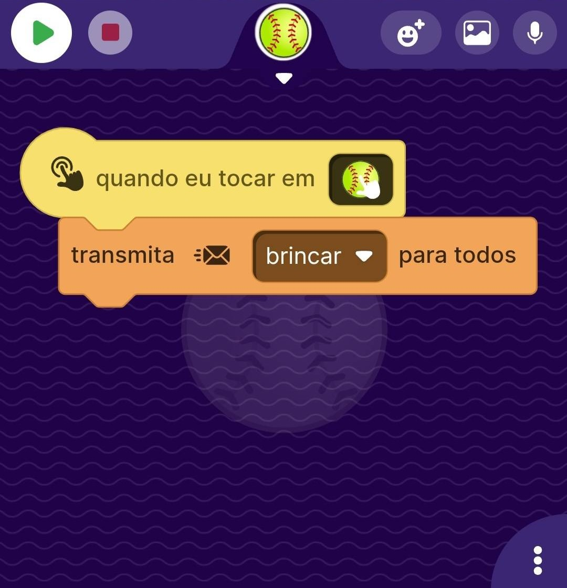
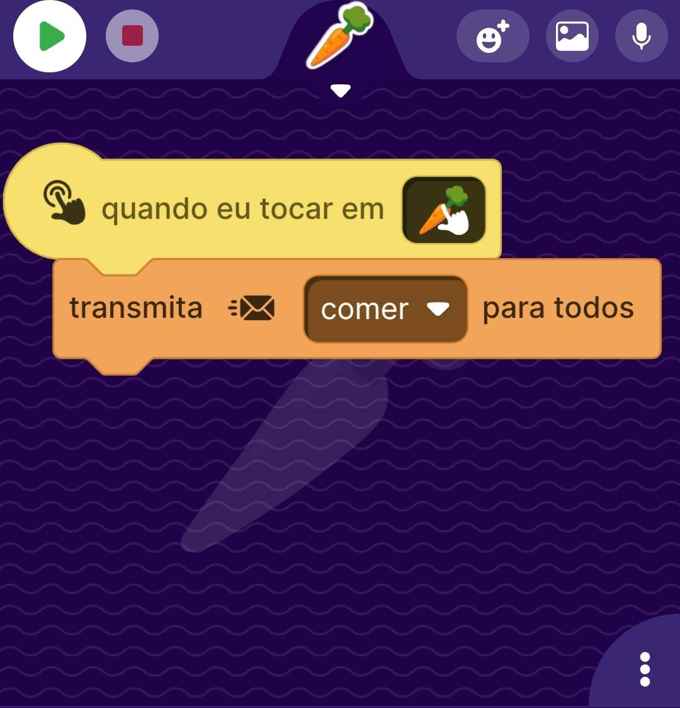
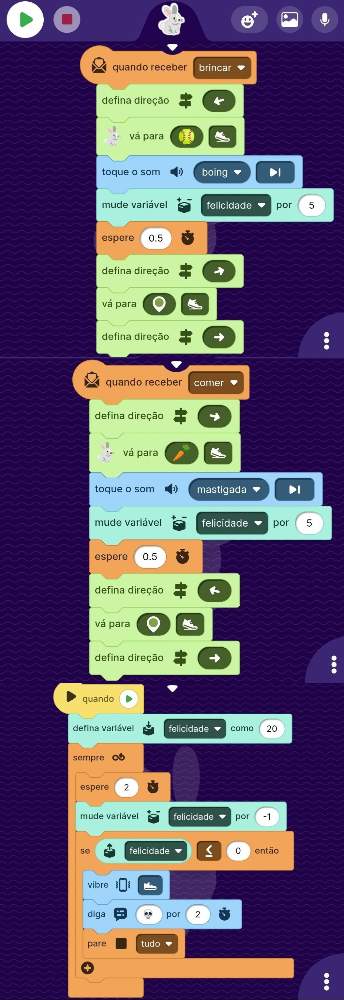

Projeto 4 - Pet Digital
Neste projeto, vamos desenvolver um jogo em que o ator principal, o Pássaro, deve esquivar das nuvens e coletar as maçãs para marcar pontos.

O Ator Bola
O ator Pássaro é controlado com blocos que simulam gravidade, movimentação e colisões. Usamos blocos como "quando play", "sempre mova" e "quando tocar" para criar a mecânica de voo.

O Ator Cenoura
O ator Pássaro é controlado com blocos que simulam gravidade, movimentação e colisões. Usamos blocos como "quando play", "sempre mova" e "quando tocar" para criar a mecânica de voo.

O Ator Coelho
O ator Pássaro é controlado com blocos que simulam gravidade, movimentação e colisões. Usamos blocos como "quando play", "sempre mova" e "quando tocar" para criar a mecânica de voo.